Results and Interpretations
Germanic words make up a majority (54%) of the 50 most common unique words in the Amalgamation corpus, but not by a great margin, compared to Latin (42%). This shows that both Latin and Old Germanic had a broad lexical influence on syntax. Latinate words occurred less frequently within programming syntax compared to Germanic (33% to 64%, respectively) - in other words, the number of words measure the breadth of influence of a certain language, while frequency measures the extent of their actual usage within code.
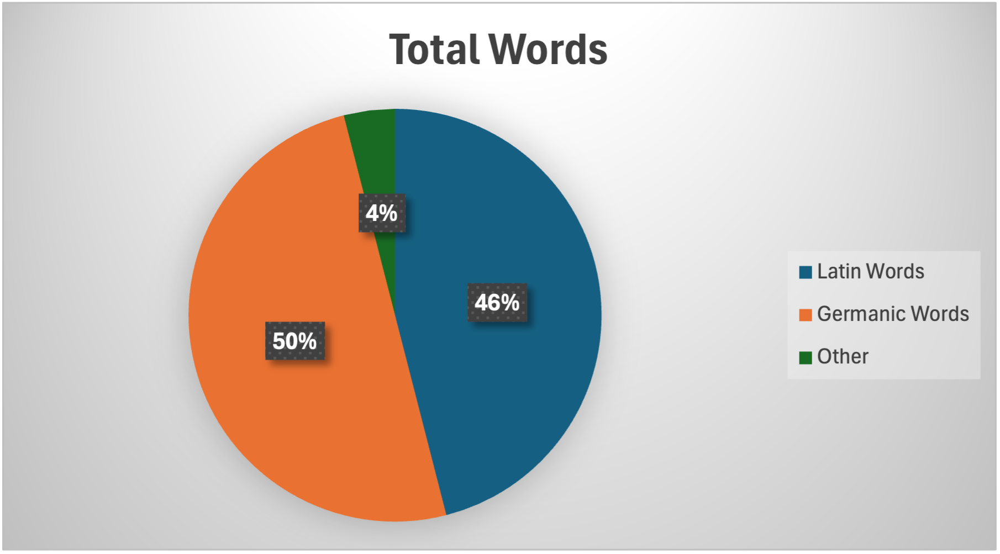
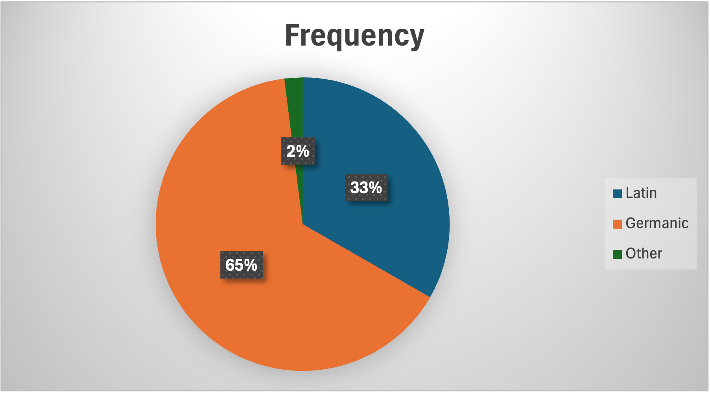
Although Latin-derived words make up nearly as many distinct terms as Germanic-derived words, they occur much less frequently in the corpus. This suggests that Latin's influence is broad, with many different Latinate words present, but these words tend to be used less often than Germanic-derived vocabulary.
The Germanic vocabulary appears to contain many of the most frequently used words. Words classed as ‘Grammar’ words made up 44% of the most commonly used words, and 85% of those words were of Germanic origin. This is consistent with the tendency for Germanic-origin words in English to serve fundamental grammatical and operational functions, while Latinate words are often more specialised or technical, and therefore are used less frequently.
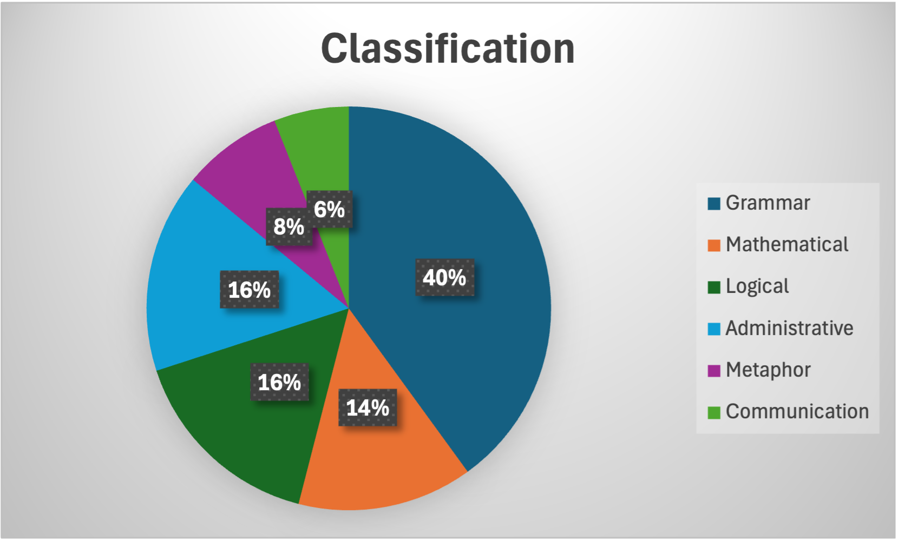
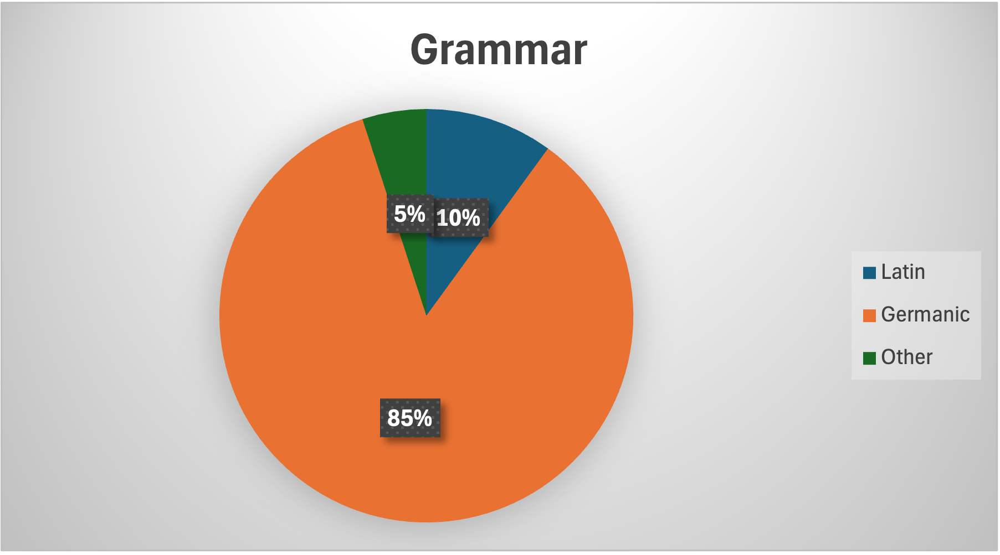
Latin-derived words dominated those classed as mathematical, administrative, metaphorical and communication
(100%, 87%, 75% and 60%, respectively) within the amalgamation corpus. This was consistent with the three mini corpora as well!
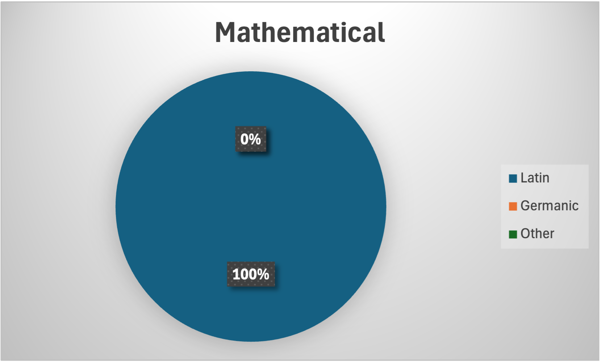
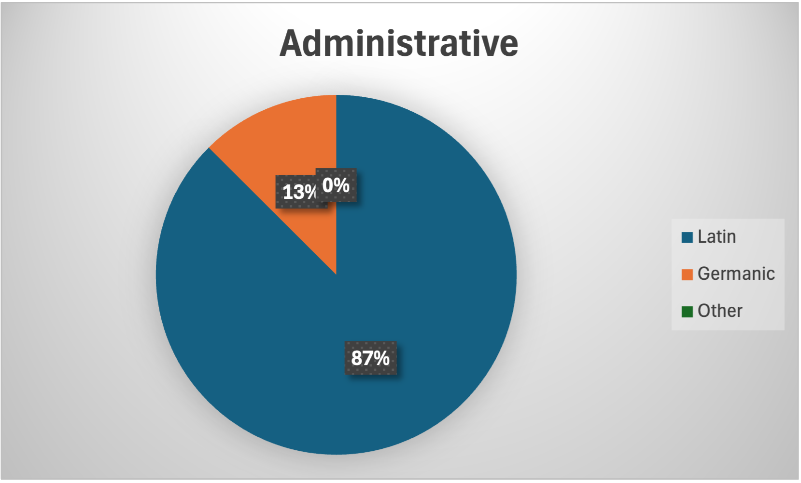
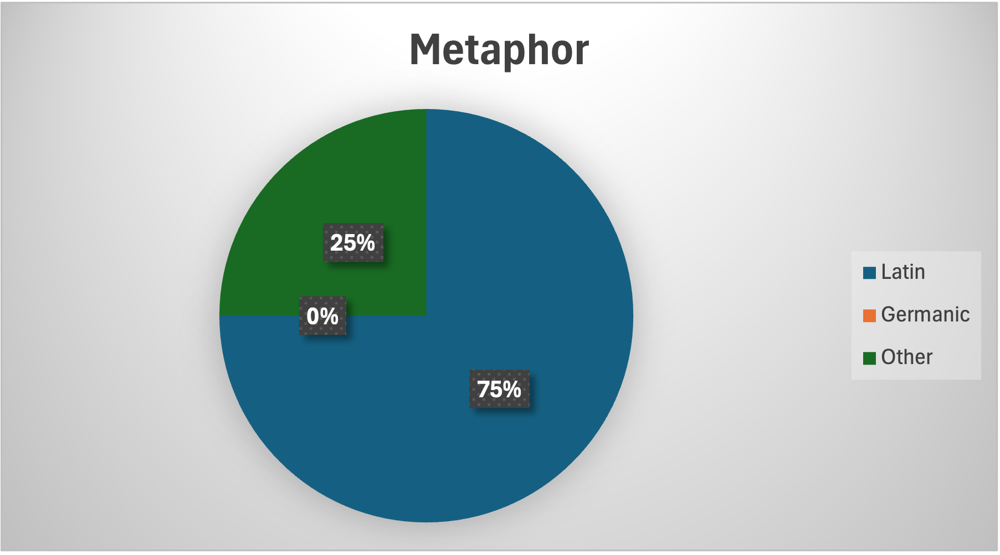
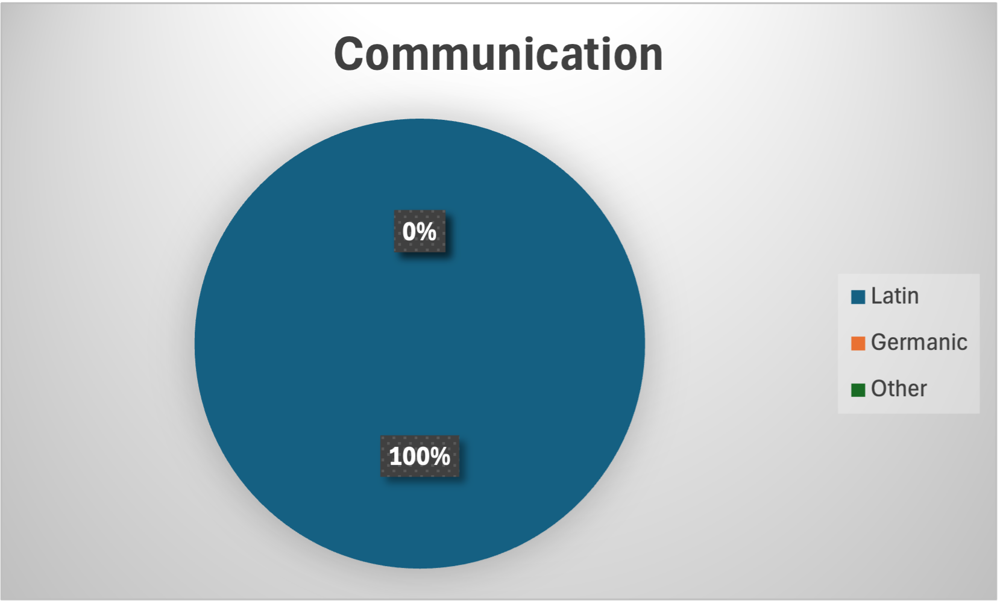
This suggests Latin’s influence is concentrated within areas involving abstraction, organisation and conceptual modelling rather than basic, grammatical language (where 90% of words were of a Germanic origin). This reflects the role of Latin as a ‘language of learning’ especially as many new technical words were coined during the renaissance.
The data from all 4 corpora (the 3 individual projects as well as the amalgamation) show adherence to Zipf’s Law, a law stating that the frequencies f of words within a language are inversely proportional to their rank r. In other words, a word ranked 2nd occurs half as often as the rank 1 word, and the rank 3 word 1/3rd as often and so on and so forth. If rank over frequency is plotted on a log-log scale, the line is approximately straight with a negative gradient. The Zipf’s Law graphs of the 4 corpora show a degree of adherence to this law, showing that the distribution of words within programming syntax of C is similar to that of a natural language.
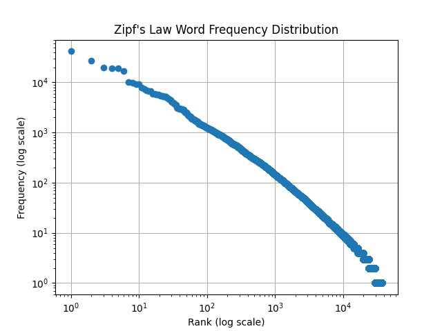
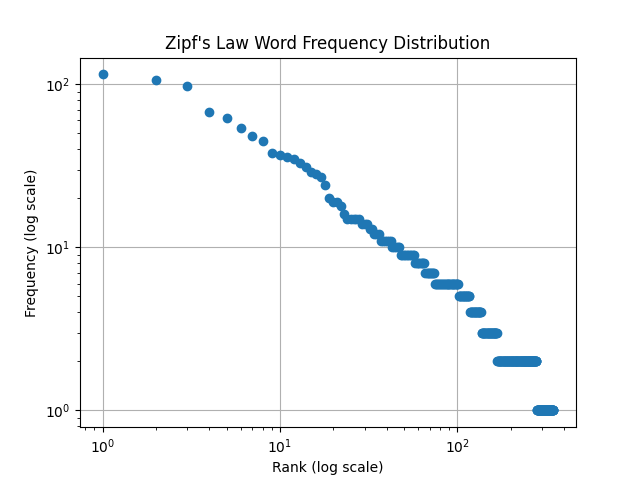
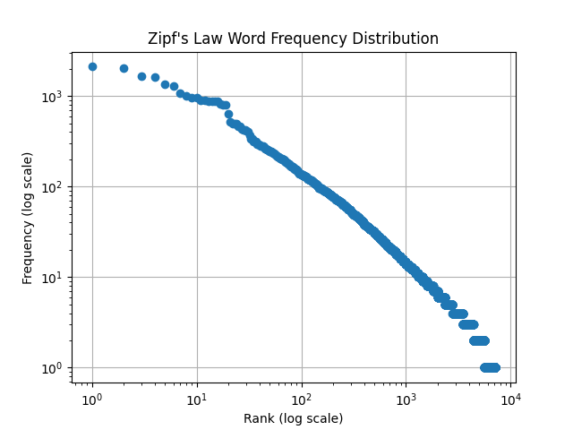
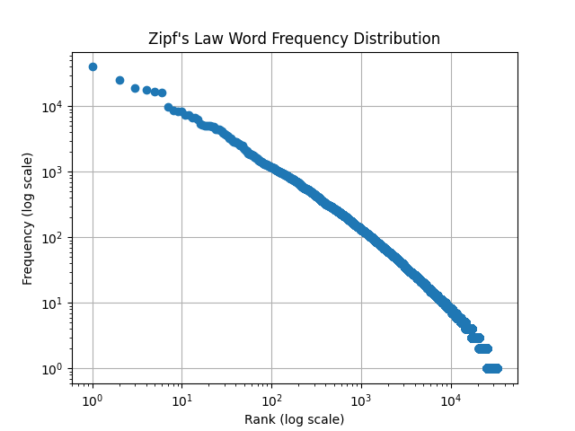
To what extent did Latin influence modern programming language syntax?
Although words originating from Germanic may account for a greater overall usage within syntax, the concentration of Latinates within mathematical, administrative and metaphorical categories show that Latin has had a significant influence on the conceptual vocabularies used to describe complex ideas within the field of Computer Science.
Regardless of the etymological origins of the English words used in syntax, programming languages and their accompanying resources are primarily English based, presenting barriers to learning for aspirational programmers who may not be fluent in it.